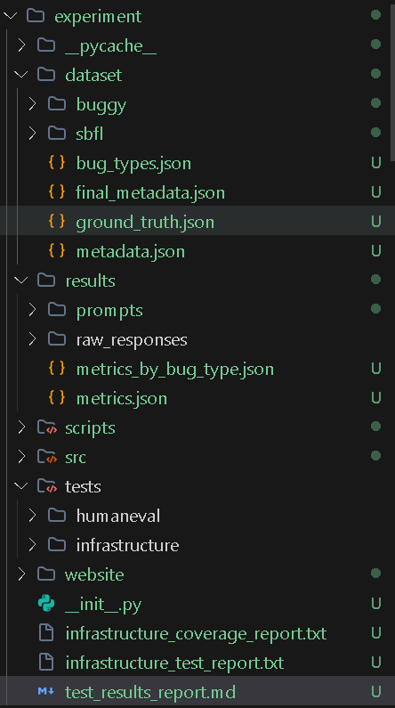

LLMs for Fault Localization
Empirical Software Engineering Study
Dora Yaroshenko
Lilac Gil-Ad
1. Introduction
Project Goals & Overview
- Primary Goal: Evaluate the effectiveness of Large Language Models (LLMs) in localizing faults within Python methods.
- Contextual Impact: Examine how different levels of context
affect LLM accuracy:
- Condition A: Source code & intent
- Condition B: Source code & intent + Tests
- Condition C: Source code & intent + Spectrum-Based Fault Localization (SBFL)
- Condition D: Source code & intent + Tests + SBFL
- Target Application: 30 curated methods from the OpenAI HumanEval benchmark.
Repository Structure

2. Evaluation Setup
Methods, Mutations & Tests
The Benchmark
- 30 functions from HumanEval.
- Each with a Natural Language docstring.
- At least 10 tests per method.
The Tests
- Extracted from single
check()block into standalonepytestfunctions. - Ensures accurate counting of passing/failing tests for SBFL (execution doesn't stop on first fail).
The Mutations
- AST-Based Mutator: Automatically injects bugs.
- Constraint 1: Exactly 1 localizable bug.
- Constraint 2: Original must pass all tests.
- Constraint 3: Mutant must fail at least one test.
- Target: "Partial Failures" preferred for optimal SBFL signal.
HumanEval method and test example


Data Collection & LLMs Used
- API: OpenRouter API
- Models:
- nvidia/nemotron-3.5-lightning-free
- openai/gpt-oss-20b-free
- Query Parameters: Temperature = 0.0 (for maximum determinism).
- Prompt Constraints: Requesting strictly formatted JSON output
(
top_1_line,top_3_lines,faulty_region,explanation). - Critical Instruction: "Do not repair the program."
Metrics & Evaluation Challenges
MRR Calculation
- Mean Reciprocal Rank (MRR) evaluates the ranking quality of
top_3_lines. - If the exact ground truth line is at position 1, score = 1.0.
- If at position 2, score = 0.5.
- If at position 3, score = 0.33.
- If not in top 3, score = 0.0.
- The final MRR is the average of these scores across all 30 methods.
Region Accuracy & NL Limits
- The model provides a natural language
faulty_regiondescription. - Limitation: Evaluating open-ended natural language programmatically is highly subjective and difficult to automate at scale.
- Solution (Region Accuracy): We approximate it programmatically by
checking if
top_1_linefalls within a relaxed ±2 line radius of the exact ground truth line.
Code example: compute_metrics.py and test_metrics_and_parsing.py


SBFL Tarantula Report

Test Coverage (Our Infrastructure)

3. Results
Performance Across Conditions
Cond A: Code Only | Cond B: Code+Tests | Cond C: Code+SBFL | Cond D: Code+Tests+SBFL
| Model | Cond | Top-1 Acc | Top-3 Acc | MRR | Invalid |
|---|---|---|---|---|---|
| nemotron-3.5 | A | 80% | 87% | 0.83 | 3.3% |
| B | 80% | 93% | 0.86 | 0.0% | |
| C | 27% | 63% | 0.43 | 3.3% | |
| D | 27% | 60% | 0.42 | 0.0% | |
| gpt-oss-20b | A | 73% | 90% | 0.82 | 6.7% |
| B | 83% | 97% | 0.89 | 3.3% | |
| C | 63% | 87% | 0.74 | 3.3% | |
| D | 77% | 87% | 0.81 | 3.3% |
Condition B (Code+Tests) universally performed best.
Visualizing the Results

Accuracy by Condition (Nemotron-3.5)

Accuracy by Condition (GPT-OSS-20b)

HTML Website Artifact

Answering the Research Questions
- RQ1 (Baseline): Strong baseline ability (73-80% Top-1 Acc) with code only.
- RQ2 (Tests Effect): Providing tests (Cond B) is the most effective context, improving MRR for both models.
- RQ3 (SBFL Effect): Providing SBFL (Cond C) degraded performance significantly, acting as a distractor rather than an aid.
- RQ4 (Combined): Cond D (Tests + SBFL) performed worse than tests alone. The models blindly trusted high Tarantula scores over logic analysis.
- RQ5 (Model Comparison):
gpt-oss-20bwas more resilient to the SBFL distractor thannemotron-3.5.
4. Conclusions
Key Findings & Lessons
Key Findings
- LLMs excel at fault localization when provided failing test cases (AssertionErrors).
- Current mid-tier open-weight models struggle to interpret purely numerical suspiciousness scores (Tarantula).
- Models often hallucinate explanations even when they correctly identify the faulty line.
Lessons Learned
- Prompt Engineering: Preventing models from outputting repaired code is difficult (Instruction Ignoring).
- Automated Evaluation: Validating natural language "Faulty Regions" requires qualitative review, limiting scalability.
- Data Prep is King: Ensuring valid AST mutations and decoupled tests took significant effort.
Limitations & Future Improvements
-
Limitation: Benchmark Size & Nature
HumanEval is mostly short, algorithmic tasks. Results may not scale to enterprise, multi-file codebases. -
Limitation: Mutant Realism
Single-operator mutations might not reflect complex, real-world logic bugs made by human developers. -
Future Improvement: Chain-of-Thought (CoT)
Explicitly asking the LLM to write down its reasoning steps before outputting the JSON might improve its handling of SBFL data. -
Future Improvement: Advanced Models
Testing state-of-the-art models (e.g., GPT-4o, Claude 3.5 Sonnet) might show better utilization of Tarantula scores.